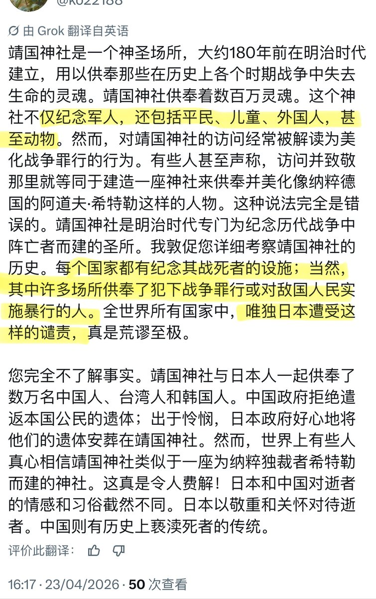
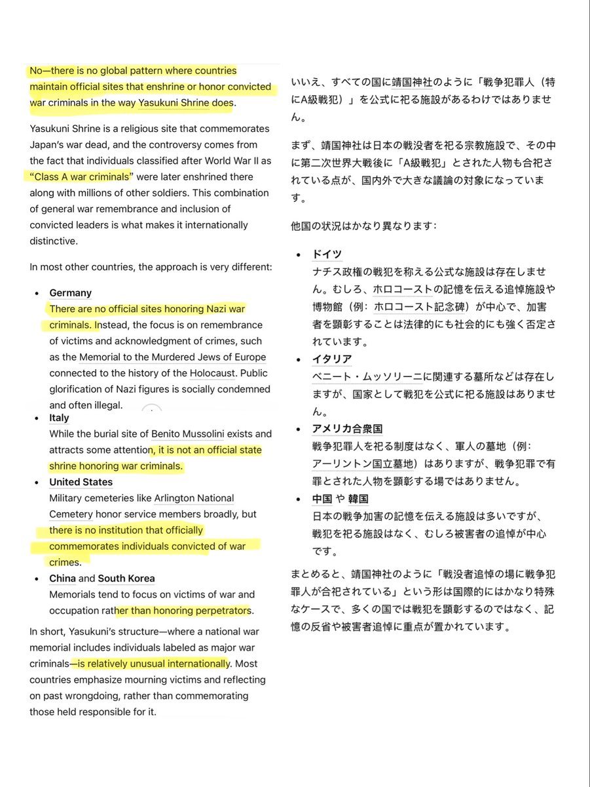
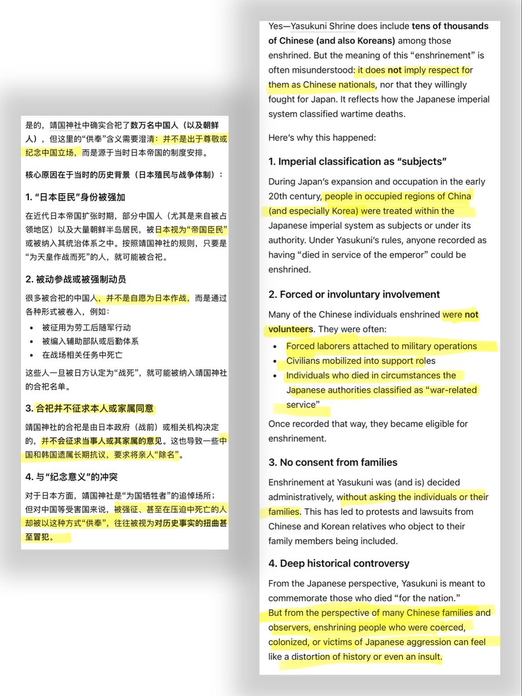

把战犯和受害平民相提并论肯定是不对的，但这里我必须纠正大家长期以来的一个误区那就是甲级战犯不是“最高级战犯”，实际上甲乙丙对应的是种类，应该叫A、B、C类战犯才对。




你是半点不敢提靖国神社供奉了甲级战犯这件事吧？
你怎么好意思把甲级战犯和在战争中无辜逝去的平民相提并论？
还想拉全世界下水，让你失望了，全世界确实只有日本会供奉甲级战犯并且每年参拜。（P2）
至于靖国神社里供奉的中国人和韩国人，你怎么好意思提？这对中国人和韩国人来说都是侮辱。详见P3。 https://t.co/5YrkiH2oZs https://t.co/ai2rftEaw2
你怎么好意思把甲级战犯和在战争中无辜逝去的平民相提并论？
还想拉全世界下水，让你失望了，全世界确实只有日本会供奉甲级战犯并且每年参拜。（P2）
至于靖国神社里供奉的中国人和韩国人，你怎么好意思提？这对中国人和韩国人来说都是侮辱。详见P3。 https://t.co/5YrkiH2oZs https://t.co/ai2rftEaw2